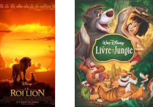
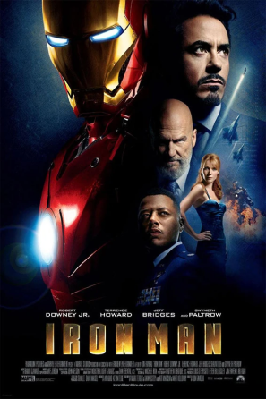

Jon Favreau, the Director, Visionary of Cinematic Immersion
Dive into the creative universe of Jon Favreau, one of the most versatile and influential talents in contemporary cinema. Born on October 19, 1966, in Queens, New York, Favreau has built an impressive career as an actor, director, producer, and screenwriter. He directed recent Avengers films as well as the Iron Man series and also acted in them.
From Cinema to Augmented Reality
Favreau began his career as an actor, but it is as a director that he truly left his mark on the entertainment industry. His career illustrates a steady progression toward ever more immersive visual experiences, foreshadowing our vision of a television that physically transforms space.

Cinema inspired by the future television
Pioneer of Revolutionary Visual Effects
Favreau stood out for his innovative use of visual effects, particularly in films like "Iron Man" (2008) and "Iron Man 2" (2010). These productions laid the foundation for the Marvel Cinematic Universe, showcasing his ability to create believable and immersive worlds.

Iron Man 2 scene where Tony Stark manipulates a hologram
From Screen to Environment
His work on "The Jungle Book" (2016) and "The Lion King" (2019) pushed the boundaries of visual immersion even further. These films, using cutting-edge animation and motion capture technology, created environments so realistic they seem almost tangible – an approach strongly resonating with our concept of television transforming physical space.

Favreau's work on "The Mandalorian" (2019) represents a decisive turn towards our concept of immersive television. The use of StageCraft technology, a filming environment with LED screens creating real-time virtual sets, is particularly noteworthy.

Jon Favreau's Innovations
- Creating photorealistic digital environments in real-time
- Offering total immersion to actors and production teams
- Producing complex visual effects without green screens
This innovation is a giant leap toward immersive augmented reality that our future television seeks to achieve.
Jon Favreau is an excellent choice to illustrate the concept of future television, as his work perfectly embodies technological innovation and visual immersion.
Other Films Directed by Jon Favreau
Iron Man 1

The predecessor to the chosen film, Iron Man 1, where Tony Stark creates his famous armor to escape his captors and return to the United States.
Iron Man 3

The successor to the chosen film, Iron Man 3, where Tony Stark, aka Iron Man, embarks on a new journey after his home is destroyed by the leader of a terrorist organization and his companion goes missing.
Avengers Endgame
The latest Avengers movie, Avengers Endgame. Thanos, having stolen the six Infinity Stones, decimated half the population. Ant-Man, escaping from a dimension he was trapped in, proposes a solution to the Avengers to save the world.
If you want to learn more about Jon Favreau, click here
If you want to access the article about the movie Iron Man 2, click here
If you want to access the article about the future object that the website is focused on, click here